CH02-056 — images
【完璧待ち】動けない完璧主義の心理
ep
CH02
Script Viewer
書庫
snapshot
guide
台本
音声
サムネ
画像
← CH02-055
CH02-057 →
CH02-056
画像
updated_at: 2026-01-14T00:17:50.251371Z
run_id:
CH02-056_mix433_20260106
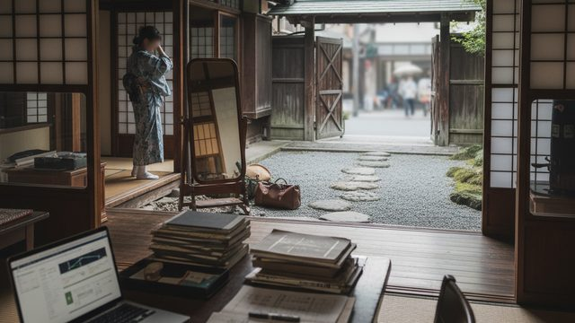
CH02-056
完璧主義の罠／恐れの根源／恐れと共に進む
CH02-056
完璧の幻想／理想像の罠／目標の緩め方／目的の明確化／必要な…
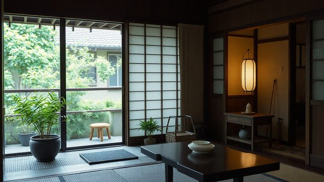
CH02-056
完璧主義の強まり／終わりの設計
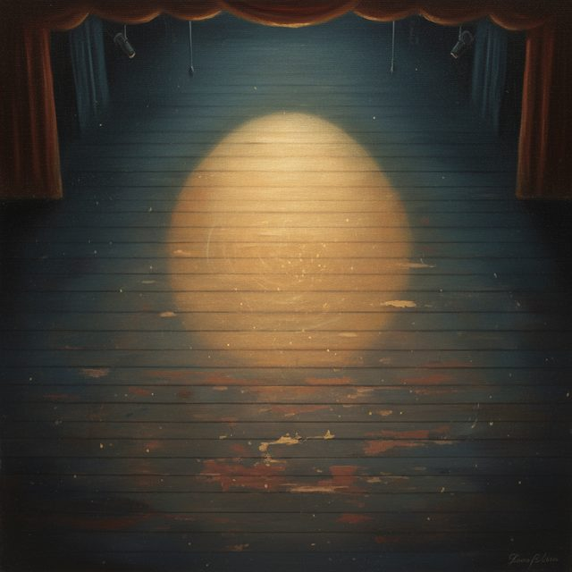
CH02-056
評価の視点
CH02-056
欠点の増加／レビューの選択
CH02-056
失敗の定義／最小単位の動き
CH02-056
安心の方法／共有の価値
CH02-056
過程の重要性／有限性の受け入れ／補い合いの必要性
CH02-056
不安のコントロール／思考のブレーキ
CH02-056
時間の意識／ズレの確認
CH02-056
先送りの罠／圧力の軽減
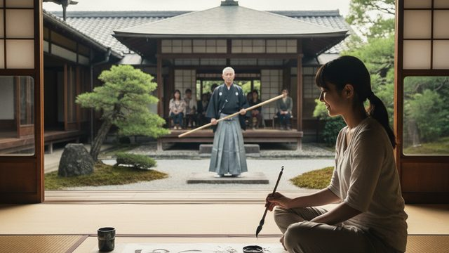
CH02-056
練習と本番の分離／他人への期待
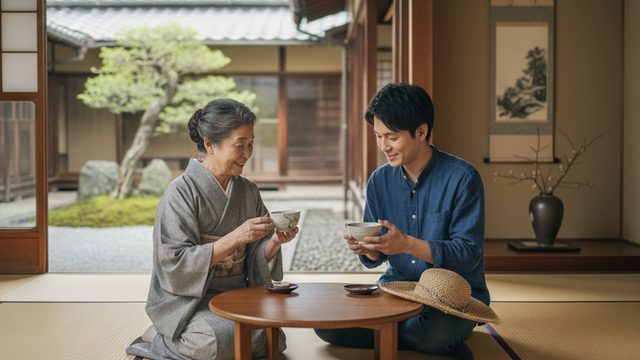
CH02-056
期待の緩和／許しの相互性／欠けの晒し
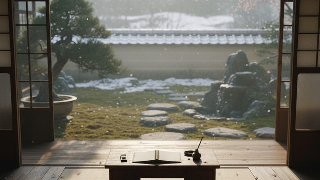
CH02-056
始める条件／環境の整え方／コントロールの手放し／余白の価値
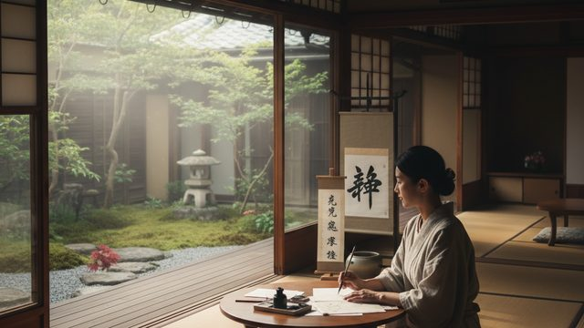
CH02-056
発見の可能性／終わらせる練習／経験の積み重ね
CH02-056
質の向上／自己像の柔軟性
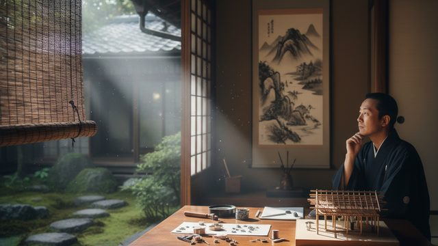
CH02-056
細部と目的／全体の確認
CH02-056
不要な削除／失敗のシミュレーション
CH02-056
完璧主義の根源
CH02-056
他人の完璧さの幻想
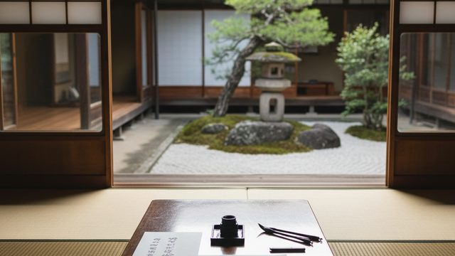
CH02-056
基準と拘束の分離／言葉の選び方／現実的な焦点
CH02-056
チェックリストの管理／感情の揺れ／感情の受け入れ／行動への…
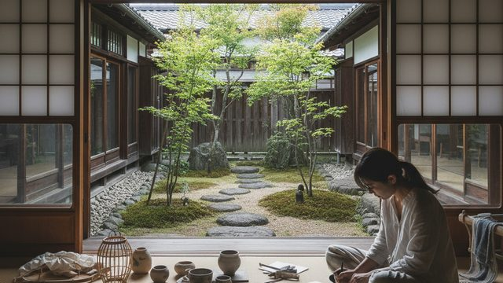
CH02-056
未完成の価値／変化の前提
CH02-056
失敗の再定義／過程の価値
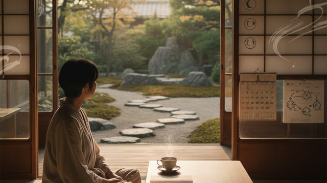
CH02-056
目的の再確認／休息の重要性／休息の計画／滑らかな動き
CH02-056
未完成の練習／前進の選択
CH02-056
過去の成功体験
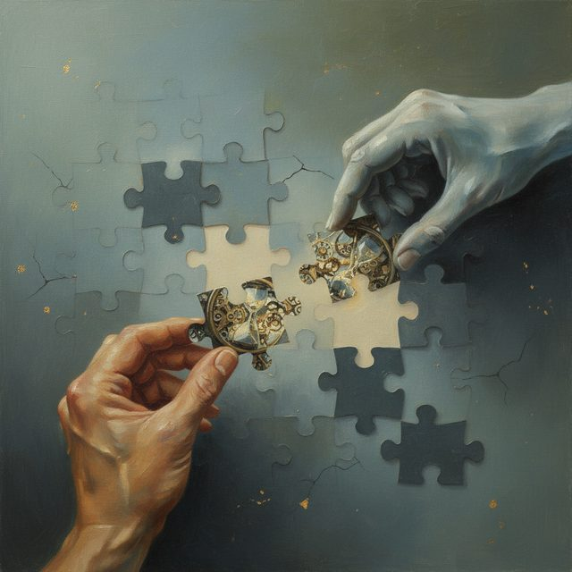
CH02-056
他人の手を借りる／欠けの新しい風合い／時間の使い方
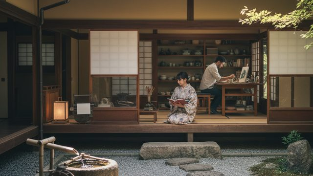
CH02-056
入力と出力の循環
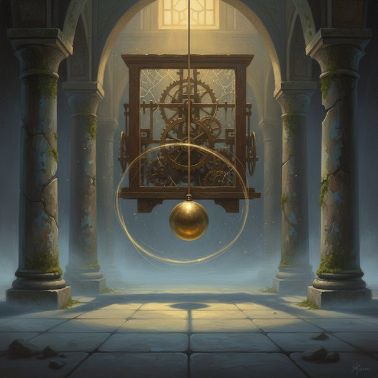
CH02-056
自分のペース
CH02-056
日常の小さな場面
CH02-056
内側の声
CH02-056
批判の対応
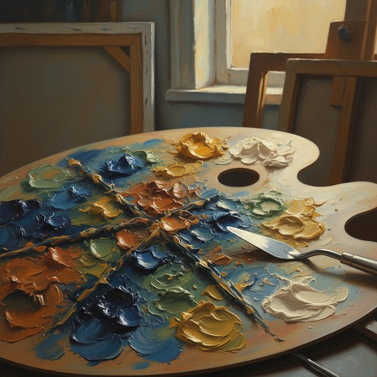
CH02-056
創造の制約
CH02-056
進捗の遅さ
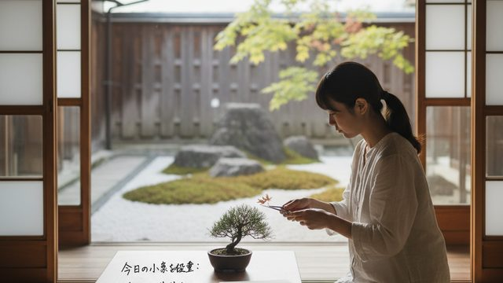
CH02-056
小さな改善
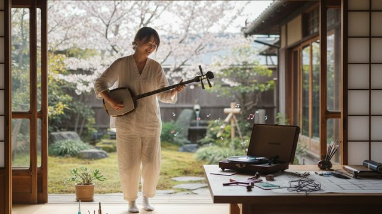
CH02-056
楽しさの回復
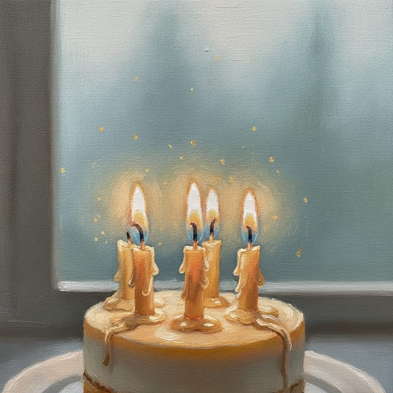
CH02-056
終わりの祝福
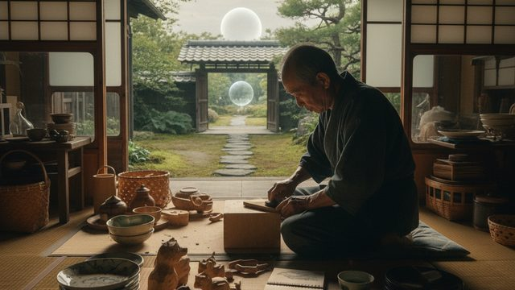
CH02-056
幻の追求／手触りの積み重ね
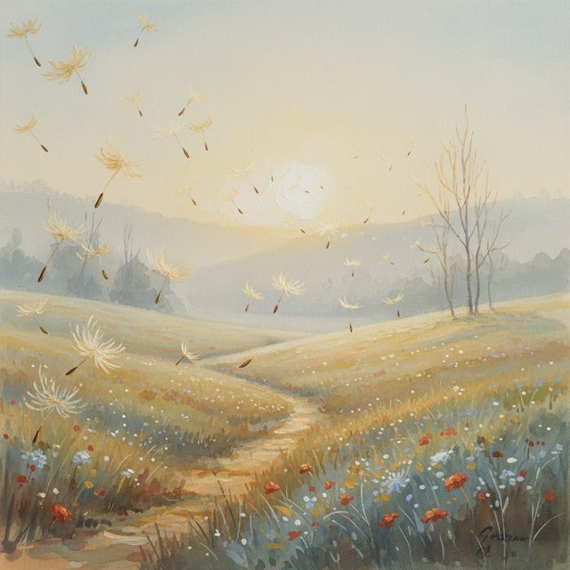
CH02-056
一歩の軽やかさ
CH02-056
周囲の文化
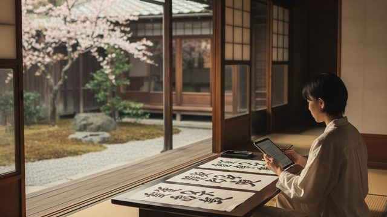
CH02-056
強みの活用／評価の対象
CH02-056
想像の期待／体の緊張
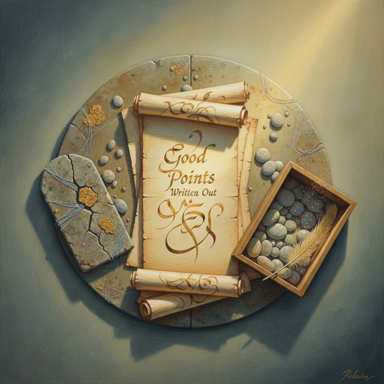
CH02-056
後悔の軽減／偶然の余白
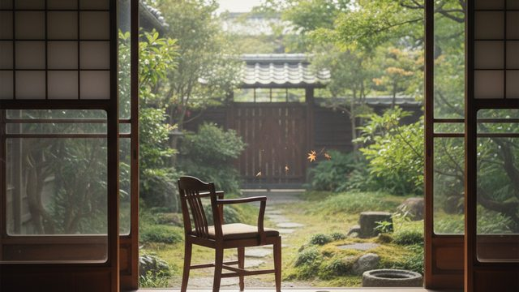
CH02-056
新しい空気
CH02-056
完璧主義の手放し／鎖の薄れ